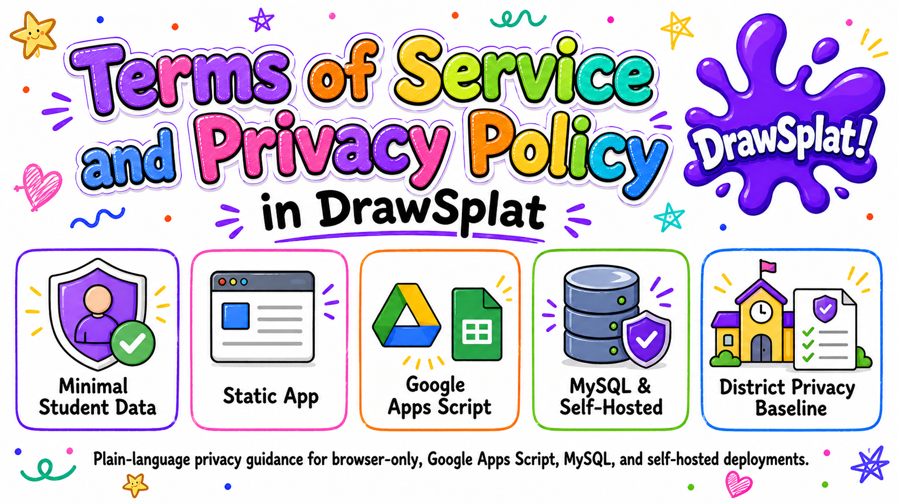
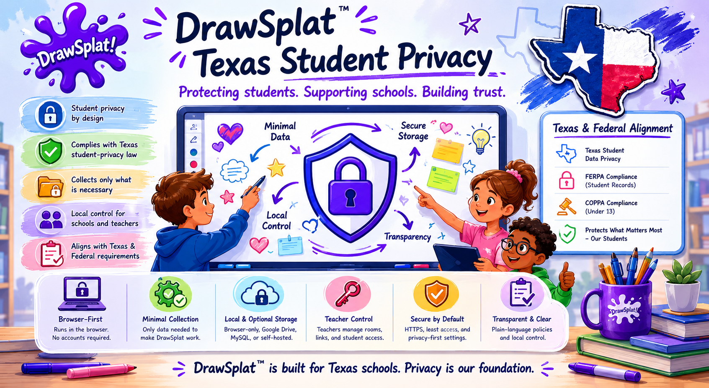
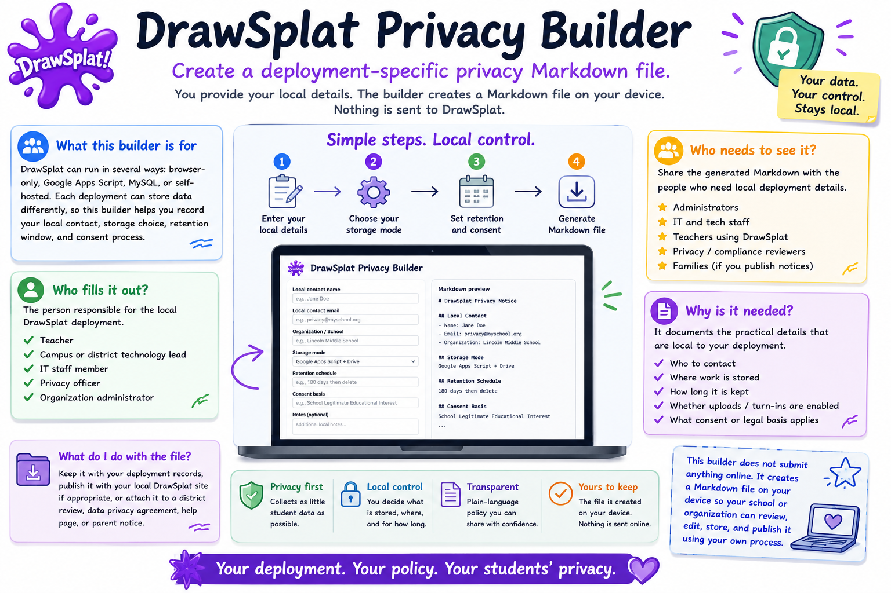

Every DrawSplatTM privacy, compliance, accessibility, and district document collected on a single page so reviewers can read, search, and print everything in one pass. Each section below preserves the original document verbatim; each section heading links back to its standalone source page.
DrawSplatTM is designed to collect as little student data as possible.
Last updated: May 16, 2026. This page explains the terms for using DrawSplatTM and the privacy practices for the static app, Google Apps Script storage option, browser-only sessions, future MySQL storage, and other self-hosted deployments.
This is a plain-language policy and district deployment addendum for DrawSplatTM. Schools and organizations may use it as the baseline privacy notice for browser-only, Google Apps Script, MySQL, and self-hosted deployments, then add their local contact, retention schedule, and consent basis. Use the privacy notice builder to generate a local Markdown notice.

Short Version
DrawSplatTM does not require student accounts in the static app.
DrawSplatTM does not sell student data or use targeted advertising.
DrawSplatTM does not sell or share student data as those terms are defined by applicable state student privacy laws.
DrawSplatTM does not use student data for AI model training, behavioral profiling, or cross-context advertising.
DrawSplatTM does not re-identify de-identified or aggregate student data.
Browser-only work stays in the user’s browser unless exported or sent to a configured backend.
Google storage uses the teacher or school’s Google Apps Script, Drive, and Sheets deployment.
Teachers, schools, or hosting organizations control student access, retention, deletion, and exports.
Hosted or managed deployments must use HTTPS, encryption at rest, breach notice within 72 hours, and a published subprocessors list.
Student data is used only for the school-authorized educational purpose.
Parent, student, and school requests should be acknowledged within 10 school days and completed within 30 calendar days when feasible.
Privacy Alignment
This policy is organized around student privacy review areas: Parental Rights, Retention and Deletion, Opt-out Options, Transparency, Encryption and Security, Consent and Age Restrictions, and Third-party Management.
1. Terms of Service
Who May Use DrawSplatTM
DrawSplatTM may be used by individual educators, students under school supervision, families, small teams, schools, districts, and organizations. When DrawSplatTM is used with students, the teacher, school, district, or organization is responsible for deciding whether the deployment is appropriate for the students and for obtaining any required consent.
Acceptable Use
Users may create whiteboard content, notes, drawings, diagrams, images, audio notes, templates, and classroom submissions. Users may not use DrawSplatTM to upload, store, share, or distribute unlawful, harmful, harassing, discriminatory, invasive, confidential, or unsafe content. Do not use DrawSplatTM to collect sensitive student records, health information, financial information, government IDs, or other high-risk personal data unless your organization has reviewed and approved the deployment.
Ownership of Content
Users and their schools or organizations retain ownership of board content they create. DrawSplatTM does not claim ownership of user-created boards, student submissions, or uploaded media. If a teacher or organization hosts DrawSplatTM, that host controls the deployment, storage location, access rules, and deletion process.
License and As-Is Use
DrawSplatTM is released under the GNU AGPL-3.0-or-later as stated in the repository LICENSE file. The software and every compliance feature shipped in it are free for all users — teachers, students, classrooms, campuses, districts, and self-hosting organizations. No individual or per-seat license is required to run DrawSplatTM on district devices. Districts that want implementation support, professional learning, compliance review, or custom development may engage those services under a separate services agreement; that does not put a paid product license on student devices. DrawSplatTM is provided without guarantees of uninterrupted service, fitness for a particular purpose, managed hosting, or legal compliance for a specific school system.
District Data Privacy Addendum
For districtwide, hosted, SSO-enabled, MySQL-backed, or managed deployments, DrawSplatTM must be accompanied by a district data privacy agreement or written addendum. That addendum must name the controlling school or district, identify the storage mode, document the approved educational purpose, list subprocessors, state the retention schedule, name the privacy/security contact, identify the breach notification contact method, document hosting location requirements, and confirm the security commitments in this policy. A signature-ready template is available at district-addendum.html.
Return and Destruction at Termination
When a school, district, or organization ends a DrawSplatTM deployment, the deployment owner must provide a way to return or export school-controlled content, then delete or destroy remaining student personal information from active systems within 30 calendar days unless a different written retention requirement applies. Backups must be deleted or aged out on the normal backup cycle, and no later than 90 calendar days when technically feasible.
Teacher and Administrator Responsibilities
Teachers and administrators are responsible for configuring storage, protecting share links, choosing appropriate room names, setting retention expectations, monitoring student use, and deleting content when it is no longer needed. Students should not be given provider setup URLs, Google Apps Script configuration details, or admin controls.
2. Privacy Policy
Definition of Student Personal Information
For this policy, student personal information means information that identifies, relates to, describes, or can reasonably be linked to a student or student household, including student names, class names tied to a student, account or SSO identifiers, student-created board content, uploaded media, audio recordings, submissions, comments, room participation data, logs tied to a student, and any other information treated as student personal information, personally identifiable information, education records, or covered information under applicable federal, state, or local student privacy laws.
Data We Collect
The static DrawSplatTM app does not require login and does not collect data on its own server. Depending on how a user or school configures it, DrawSplatTM may process the following information in the browser or configured storage:
Board title, class name, room name, panel names, and assignment mode settings.
Optional student name entered by the teacher or student.
Whiteboard objects such as drawings, shapes, text, sticky notes, comments, diagrams, images, audio notes, and uploaded files.
Local browser settings such as workspace mode, interface mode, storage mode, Google Apps Script URL, and session expiration time.
Google Apps Script save logs if the teacher or school enables Google Drive and Sheets storage.
How Data Is Collected
Data is created when users draw, type, upload media, record audio, save locally, export, or send a board to a configured backend. Browser-only mode stores data in the local browser. Google mode sends configured board data to the teacher or organization’s Google Apps Script deployment. Future MySQL or standalone storage modes would send data to the organization’s configured backend endpoint.
How Data Is Used
Data is used only for the school-authorized educational purpose: displaying the whiteboard, restoring autosaved work, supporting classroom rooms, saving or loading boards, creating templates, supporting turn-ins, and helping teachers manage classroom activity. DrawSplatTM does not use student data for advertising, behavioral profiling, cross-context tracking, sale, lease, rental, data mining except for authorized educational purposes, or training artificial intelligence models. These restrictions apply to the static app, Google Apps Script mode, MySQL mode, self-hosted mode, and any future hosted DrawSplatTM version.
De-identified and Aggregate Data
DrawSplatTM does not need de-identified or aggregate student data to operate the static app. If a hosted or managed deployment ever uses de-identified or aggregate operational data, it must remove direct and indirect identifiers, use the data only to maintain, secure, improve, or report on the service for the school-authorized purpose, and must not attempt to re-identify students or allow others to re-identify them.
Data We Do Not Collect
The static DrawSplatTM app does not require email addresses, passwords, student account registration, payment details, biometric data, precise location, or advertising identifiers. If a school adds SSO, analytics, a backend API, or third-party hosting, those additions must be documented by the school or hosting provider.
Hosting Location
Browser-only data remains on the user’s device/browser profile. Google Apps Script data is stored in the controlling teacher, school, or district Google environment, subject to that organization’s Google configuration and regional settings. MySQL, standalone, hosted, or managed deployments must document the country, region, cloud provider, data center, or school-controlled server location where student data is stored and processed, including backup locations when known. Deployments subject to GDPR, state data-residency rules, or district hosting requirements must approve hosting location before student use.
FERPA/COPPA School Official Statement
When DrawSplatTM is used by a school or district for an approved educational purpose, the deployment owner or service operator may be treated as a school official or authorized service provider under FERPA and similar student privacy laws, acting under the direct control of the school for the use and maintenance of education records. For COPPA-covered students, the school or district may provide consent on behalf of parents when permitted by law and when DrawSplatTM is used solely for the school-authorized educational purpose.
3. Student Privacy Commitments
P - Parental Rights and Access
Parents and eligible students may request access, correction, export, or deletion of student board content through the teacher, school, district, or organization that controls the deployment. Schools must respond according to FERPA, COPPA, state law, and local policy, acknowledge requests within 10 school days, and complete requests within 30 calendar days when feasible. DrawSplatTM storage modes are designed so the controlling organization can locate and delete browser, Google, MySQL, or self-hosted records.
R - Retention and Deletion
Browser-only sessions may be configured to expire after a set time, such as 24 hours. Teachers can reset boards. Google Drive and Sheets data remains until the teacher or organization deletes it from their Google account. MySQL and self-hosted deployments must define a retention schedule, store expiration dates where applicable, and run a deletion job for expired sessions, snapshots, media, and turn-ins.
O - Opt-out Options
Teachers and schools may choose browser-only mode instead of Google, MySQL, or standalone backend storage. Users may avoid optional uploads, audio recordings, Google sync, MySQL sync, and backend storage. DrawSplatTM does not use targeted advertising, behavioral profiling, sale of data, or AI model training, so there is no targeted advertising or profiling opt-out to manage.
T - Transparency
This policy lists the categories of data processed, how they are collected, who controls them, which third parties may be involved, and which storage modes are available. Schools must publish the exact storage mode, retention window, legal/consent basis, contact person, and any added third-party services for their deployment before student use.
E - Encryption and Security
DrawSplatTM must be served over HTTPS in production. Browser-local data is protected by the browser, device account, and local device controls. Google storage relies on Google account security, including HTTPS, encryption at rest provided by Google, and MFA enforced by the organization. MySQL and self-hosted deployments must use encrypted transport, encryption at rest for databases, disks, object storage, and backups, least-privilege database accounts, access controls, audit logging for admin actions, secure backups, and routine patching.
C - Consent and Age Restrictions
Students under 13 or under other applicable age thresholds should use DrawSplatTM only under teacher, school, district, parent, or guardian direction. Before student use, the controlling school or organization must document its consent basis, parent notice process, approved educational purpose, approved age/grade bands, whether the school provides COPPA consent on behalf of parents when permitted, and applicable FERPA, GDPR, state privacy law, and local policy obligations.
T - Third-party Management
The default static app has no required third-party service. Optional Google mode uses Google Apps Script, Google Drive, and Google Sheets controlled by the teacher or organization. Optional MySQL mode uses the organization’s own database and backend API. Payment links may use PayPal. Any SSO, analytics, hosting, backend, payment, or managed-service vendor must be disclosed in a subprocessors list before student use, reviewed for privacy/security fit, and held to written privacy and security expectations consistent with this policy.
4. Storage Modes and Retention
Mode
Where Data Is Stored
Default Retention
Deletion Method
Browser-only
User’s browser storage on the current device/profile
Until reset, browser data is cleared, or configured session expiration occurs
Use Reset Board, clear browser data, or wait for expiration
Google Apps Script
Teacher/school Google Drive and Google Sheets
Controlled by the teacher or organization
Delete files, folders, rows, rooms, or scripts from the controlling Google account
MySQL backend
Organization-managed MySQL database and file/object storage
Must be configured by the hosting organization, recommended 24 hours for temporary sessions unless a class or district policy requires longer
Backend admin delete tool, database retention job, or organization retention process
Standalone backend
Organization-managed server or storage folder
Must be configured by the hosting organization, recommended 24 hours for temporary sessions
Backend expiration job, admin delete tool, or organization retention process
5. Third Parties
DrawSplatTM’s static pages do not require third-party analytics, advertising, or tracking. Server-side visit counts come from the static-host CDN (Cloudflare Pages by default), which never adds a beacon or any other request to the visitor’s browser. The following services may be involved only if the user, teacher, or organization chooses to use them:
Google Apps Script, Drive, and Sheets: optional storage, room sync, templates, and turn-ins.
MySQL: optional future self-hosted database for rooms, users, submissions, audit records, and session expiration.
PayPal: optional payments or donations from public pricing and support links.
Hosting provider: the organization’s selected web host, school server, or domain provider.
Future SSO provider: optional identity provider for standalone deployments, such as a school-managed Google Workspace or Microsoft Entra configuration.
Subprocessors and Change Notices
Before student use, any hosted or managed DrawSplatTM deployment must publish a subprocessors list naming each provider, the service purpose, the type of data processed, and the provider’s privacy/security documentation. Schools must receive at least 30 calendar days’ notice before material new subprocessors are added for student-data processing when feasible, and must have a reasonable opportunity to object, disable the affected integration, or terminate the affected hosted service.
6. Security Practices
Use HTTPS for any public deployment and redirect HTTP traffic to HTTPS.
Keep admin pages and provider settings separate from student whiteboard pages.
Do not place passwords or sensitive student information in share links.
Use school-managed accounts with MFA for Google Apps Script and Drive storage.
Use least-privilege access for hosting, database, Google, and backend administrators.
Encrypt backend databases, file storage, object storage, and backups at rest when using hosted, MySQL, or standalone storage.
Record administrative access, exports, deletes, retention-job activity, and security-relevant configuration changes in audit logs.
Review uploaded files and board content according to school acceptable-use rules.
Patch hosting systems, scripts, and backend dependencies on a regular schedule.
Incident Response and Breach Notice
For hosted, MySQL, SSO-enabled, or managed deployments, the operator must investigate suspected unauthorized access, contain the issue, preserve relevant logs, and notify the affected school or district through the published privacy/security contact method without unreasonable delay and no later than 72 hours after confirming a breach involving student personal information. Notices should describe what happened, the data involved, affected users if known, containment steps, and recommended protective actions.
Security Review Expectations
Hosted, MySQL, SSO-enabled, or managed deployments must receive technical/security review before student use and at least annually after launch. Additional review must occur after material changes to authentication, storage mode, hosting provider, subprocessors, database permissions, or backend code. Reviews must include dependency patching, access control validation, database permission review, backup/restore testing, audit-log review, and vulnerability scanning or penetration testing appropriate to the risk and scale of the deployment.
Vulnerability Reporting
Schools, security researchers, and users may report suspected vulnerabilities to the privacy/security contact listed by the deployment owner. Reports must be acknowledged promptly, triaged according to severity, and remediated before public disclosure when practical.
7. District Deployment Checklist
Before approving DrawSplatTM for student use beyond browser-only local testing, the school or district should document:
The storage mode: browser-only, Google Apps Script, MySQL, standalone backend, or hosted service.
The hosting/data location, including country, region, cloud provider, district server, and backup location when known.
The approved educational purpose and whether student uploads, audio, turn-ins, or SSO are enabled.
The retention schedule, including default 24-hour temporary sessions or any longer class/district retention rule.
The privacy/security contact for parent, school, district, and vulnerability reports.
The breach notification contact method, such as a monitored district email address or ticketing queue.
The subprocessors list and notice process for new subprocessors.
The consent or notice basis for students under 13 and any other covered age group.
The encryption-at-rest, backup, audit-log, and breach-notification expectations for the chosen deployment.
The security review schedule, including pre-launch review and at least annual review for hosted, MySQL, SSO-enabled, or managed deployments.
The data return/destruction process at contract termination or when the deployment is retired.
8. Contact, Requests, and Policy Changes
For classroom or school deployments, privacy requests should go first to the teacher, school, district, or organization that controls the DrawSplatTM deployment and storage. That organization must publish a monitored privacy/security contact, acknowledge parent/student/school requests within 10 school days, and complete access, export, correction, or deletion requests within 30 calendar days when feasible. The controlling organization can locate, export, correct, or delete student content from browser storage, Google Drive/Sheets, MySQL, or its self-hosted backend.
Material changes to this policy should be posted on this page with an updated date. Schools should notify affected teachers, students, and parents when storage modes, third-party providers, retention periods, or student data practices change.
9. Hosted-Service Boundary
This policy covers the static app, school-controlled Google Apps Script deployments, MySQL/self-hosted deployments, and baseline expectations for managed deployments. If DrawSplatTM ever offers vendor-managed hosting directly, that hosted service should publish separate hosted-service terms or a signed district agreement that identifies hosting location, subprocessors, support commitments, uptime expectations, incident response roles, data segregation controls, security review frequency, retention defaults, and deletion/export procedures.
10. Policy Version History
Date
Version
Change Summary
May 16, 2026
v3.0
Initial PROTECT-aligned terms and privacy policy for DrawSplatTM v3.0.
May 17, 2026
v3.0.1
Added request timelines, subprocessors notice, breach contact method, return/destruction, de-identified data, hosted-service boundary, hosting location, state privacy sale/share language, FERPA/COPPA school official language, and district addendum template.
May 24, 2026
v3.1.0
Compliance features released: Activity Records (audit log), text + link safety filters, board freeze, student age band lock, teacher-issued parent verification code, student data export and deletion endpoints, retention policy + scheduled cleanup, time-limit enforcement (browser + server), Compliance Console panels, District Privacy Packet generator, Texas SCOPE Act alignment for age registration.
Compliance Features (v3.1.0)
The DrawSplatTM service includes the following compliance-focused capabilities. The Compliance Console (inside Teacher Admin) is the single surface for configuring them, and the District Privacy Packet is the artifact a district reviewer can download to inspect the current configuration plus the last 90 days of Activity Records.
Activity Records (audit log). Every compliance-relevant action — board saves, image uploads, moderation decisions, parent requests, age-band changes, data exports, data deletions, admin setting changes, retention runs — writes an immutable row to a dedicated Audit sheet tab in your Google Sheet. Filterable in the Compliance Console; downloadable as CSV or JSON.
Safety filters. Server-enforced text keyword filter and link allowlist run on every board save. Hits are logged as TEXT_FILTER_HIT events; blocked text is rejected before reaching storage.
Board / room freeze. A teacher or administrator can freeze a board, blocking all future writes until unfrozen. Frozen state is enforced server-side.
Student Age Band Lock. Each student record carries one of under_13, 13_to_17, 18_plus, or unknown_minor. The band is server-locked; only an administrator can change it, every change requires a reason and emits an AGE_BAND_CHANGED audit event. Aligned with the Texas Securing Children Online Through Parental Empowerment Act’s age-registration provision.
Teacher-issued parent verification. An administrator can generate a one-time 8-character verification code for a student. The code (SHA-256-hashed with a server-side salt) lets a parent verify their relationship through the school’s existing parent-communications channel and skip the manual identity-confirmation step.
Family Access Tools. Parents submit requests (view / export / correct / delete / pause / safety report / privacy question) at /parents/. Verified requests appear in the Compliance Console with Approve / Deny / Done controls. Each transition is audited.
Student data export. An administrator can download a ZIP of every board and turn-in tied to a student, plus the user row (sans credentials), a machine-readable manifest.json, and a human-readable README. Logged as DATA_EXPORT.
Student data deletion. An administrator can delete a student’s boards and turn-ins (Drive files moved to trash; sheet rows removed) and the user row. Logged as DATA_DELETED with counts.
Retention policy and scheduled cleanup. District-configurable thresholds for archive-after, delete-after, and audit-keep windows. A daily Apps Script trigger prunes accordingly; manual runs are also available. Each pass writes a RETENTION_ACTION event.
Time-limit enforcement. When enabled, students see a remaining-time chip in the corner of the whiteboard; the browser locks the workspace at the daily limit and outside allowed hours. The Apps Script save endpoint enforces the same limits as the authoritative gate.
District Privacy Packet. One-click ZIP containing the current compliance configuration snapshot, the last 90 days of Activity Records as CSV, all parent-request tickets, and a README pointing at Terms & Privacy and District Addendum. Surfaceable to district reviewers without involving DrawSplatTM.
Operator notes for school IT staff and district administrators live in docs/COMPLIANCE.md in the repository.
How DrawSplatTM complies with Texas student-privacy law.
This page is written in plain language for school administrators, teachers, and parents who want to understand what DrawSplatTM does to align with Texas laws and federal rules that apply to K–12 students. It is not legal advice. Your district counsel should review specific obligations against your data sharing agreement (DPA).

Snapshot of how DrawSplatTM aligns with Texas and federal student-privacy requirements — the detailed mapping starts below.
The laws this page covers
Texas SCOPE Act (Securing Children Online through Parental Empowerment Act) — protects Texas minors under 18 with rules on age registration, parental controls, harmful-content strategies, and data-use limits. The Texas Attorney General publishes an overview at texasattorneygeneral.gov. Parts have been challenged in court; we implement what is currently in force, not what has been enjoined.
FERPA (Family Educational Rights and Privacy Act) — federal law giving parents and eligible students rights over education records, including the right to inspect, correct, and control disclosure.
COPPA (Children's Online Privacy Protection Act) — federal law about collecting personal information from children under 13. In school deployments the district typically acts as the parent's agent for consent.
Texas Education Code 32.151–32.156 — framework for student data agreements between districts and online service providers.
CIPA (Children's Internet Protection Act) — federal E-rate requirement that schools and libraries deploy a technology protection measure that blocks visual depictions of obscenity / child pornography / content harmful to minors, plus an internet safety policy. CIPA is a network-level obligation on the district, not a privacy law on the vendor. DrawSplatTM provides supporting features (see “CIPA support statement” below) but does not replace the district's network filter or internet safety policy.
What this looks like in DrawSplatTM
Every requirement below maps to a feature in the app you can demonstrate to a district reviewer, not just a paragraph in the terms.
1. Age registration and locking
SCOPE requires providers to register the age of a person creating an account and prevent that person from later changing it. DrawSplatTM assigns each student record an age band — one of under_13, 13_to_17, 18_plus, or unknown_minor. The band:
Is server-locked. Students cannot change it.
Can only be changed by an administrator, and only with a written reason.
Records every change in the Activity Records audit log (AGE_BAND_CHANGED) with the old value, new value, who changed it, and why.
Defaults to unknown_minor — the safest assumption — until a roster import or admin entry provides the actual value.
This is configured in Teacher Admin → Compliance Console → Student Age Band Lock.
2. Strategies to limit harmful content reaching minors
SCOPE expects providers to have strategies (not perfect filtering) to keep harmful content away from known minors. We layer multiple safeguards:
Server-enforced text keyword filter. Every save scans sticky notes, text boxes, comments, and board titles. Hits write a TEXT_FILTER_HIT event and (by default) reject the save.
Link allowlist. Pasted URLs are checked against a district-managed allowlist before save.
Manual moderation queue. Teachers freeze boards or remove items they find unsafe.
Audit visibility. Every safety event is logged, so a district can prove ongoing review.
Notable scope limitation: some content-filtering provisions of SCOPE were enjoined by federal court. We do not implement parts that are not currently in force.
3. Parental empowerment
SCOPE and FERPA both give parents tools to oversee their child's online services. DrawSplatTM's Family Access Tools at /parents/ give parents one place to:
View what data is stored about their student.
Download a complete ZIP export of their student's boards, turn-ins, and account row (machine-readable manifest + human-readable README).
Correct account information.
Delete stored work.
Pause account access.
Report a safety concern.
Ask a privacy question.
Parents are verified through a teacher-issued one-time code — an 8-character alphanumeric value the school passes through its existing parent-communications channel. The code is stored only as a SHA-256 hash, expires in 14 days, and is single-use.
4. Data-use and data-sharing limits
SCOPE and FERPA both restrict how minor-data is used and shared. DrawSplatTM's declarations:
No advertising. The product has no ad system, no tracking pixels, no third-party analytics scripts. Visit counts come from Cloudflare Pages’ server-side analytics on the static-host CDN, which never adds a beacon or any other request to the visitor’s browser.
No sale of data. Student data is never sold or licensed to third parties for any purpose.
No AI training on student data. Student boards and submissions are never used to train AI models — ours or anyone else's.
Storage stays where you put it. If your district configures the Google Apps Script backend, your data lives in your Google Drive and Sheets. If you self-host with the MySQL backend, the data is on your servers. We don't operate the storage.
Sub-processors are limited. The only third parties involved are: Google Workspace (if you use the Google backend), Microsoft Identity (if you enable Microsoft sign-in on the Community board), and your static-host CDN (Cloudflare Pages by default).
5. Right to inspect and correct (FERPA)
FERPA gives parents and eligible students the right to inspect education records. The Family Access Tools request workflow and the admin-initiated Export Data button satisfy this end-to-end. Every export logs a DATA_EXPORT event with counts and the supplied reason.
6. Right to consent / withdraw consent
Under FERPA the district controls disclosure of education records. Under COPPA the district acts as the parent's agent for the under-13 cohort. DrawSplatTM defers to district policy — we don't disclose student data to anyone outside the district's own deployment.
7. Right to deletion
The Family Access Tools → Delete workflow lets a parent request and an administrator execute a complete deletion of a student's boards, turn-ins, and account row. Drive files go to trash (recoverable for 30 days at the file owner's discretion); sheet rows are removed. A DATA_DELETED event records counts and the supplied reason.
8. Time-of-use and limits
When enabled, the Compliance Console's Use Limits section enforces daily-minutes caps, session limits, allowed hours of day, and weekend restrictions. The browser locks the workspace at the limit; the server gates save requests so a student cannot bypass the lock by reloading the page.
9. Audit and accountability
The Activity Records log writes a row for every compliance-relevant action: logins, board saves, board freezes, image uploads, parent requests, age-band changes, data exports, data deletions, admin setting changes, retention runs, time-limit hits. Records are filterable, exportable as CSV or JSON, and included in the District Privacy Packet download.
10. Retention and disposal
Districts configure how long boards and audit records persist via the Compliance Console's Retention Policy & Cleanup section. A nightly Apps Script trigger (installable from the same panel) archives boards older than the archive threshold, deletes boards older than the delete threshold, and prunes audit rows older than the keep window. Every run logs a RETENTION_ACTION event.
11. CIPA support statement
The Children's Internet Protection Act (CIPA) is a federal E-rate condition on the school or library: covered institutions must deploy a technology protection measure that blocks visual depictions of obscenity, child pornography, and content harmful to minors, and must adopt an internet safety policy. CIPA is a network-level obligation on the district, not a privacy law on the vendor. DrawSplatTM ships features that support a district's CIPA posture but does not replace the district's filter or internet safety policy:
Server-enforced link allowlist. Pasted URLs are checked against a district-managed allowlist before save.
Server-enforced text keyword filter. Hits write a TEXT_FILTER_HIT event and (by default) reject the save.
Board and room freeze. Teachers freeze a board to block all writes until they unfreeze it.
Image upload approval queue. Student image uploads land as pending and stay hidden on the student view until a teacher approves them. Rejection trashes the file. Approve / reject decisions are recorded as IMAGE_APPROVED / IMAGE_REJECTED events.
Audit trail. Every safety event is logged, so a district can prove ongoing review.
DrawSplatTM does not replace the district's required network-level internet filter. CIPA compliance also requires an internet safety policy and (in many jurisdictions) ongoing internet-safety education, both of which remain district responsibilities.
The "show me everything in one click" answer
For a district reviewer, signature-ready compliance evidence is one click in Teacher Admin → Compliance Console → District Privacy Packet → Download District Privacy Packet. The ZIP contains:
The current compliance configuration (every setting that is on, off, or set to a specific value).
The last 90 days of Activity Records as CSV.
All parent-request tickets and their dispositions.
A README pointing back at Terms & Privacy and the District Addendum.
This is the artifact that goes with your data sharing agreement (DPA) submission.
What this page does not promise
This page is not legal advice. Specific obligations under your local data sharing agreement or any individual state law require review by your district's counsel.
Feature parity is not guaranteed across the three deployment modes (browser-only / Apps Script / MySQL). The browser-only mode has no server, so server-side enforcement features do not exist there. See the setup docs for the per-mode capability matrix.
Some Texas SCOPE Act provisions have been blocked by federal court. We do not implement requirements that are not currently in force.
Independent audit (SOC 2, ISO 27001, etc.) is not in scope for a free open-source project. Districts that require certified audits should engage paid services or use the self-hosted MySQL backend on infrastructure their existing audits already cover.
Where to read more
Terms & Privacy — the formal terms-of-service and privacy policy.
Use this template when a school or district wants written deployment documentation for browser-only, Google Apps Script, MySQL, standalone, SSO-enabled, hosted, or managed DrawSplatTM use. Legal teams may adapt it to local requirements.
Student data will be used only for the school-authorized educational purpose.
Student data will not be sold, leased, rented, or shared as defined by applicable state student privacy laws.
Student data will not be used for targeted advertising, behavioral profiling, cross-context advertising, data mining except for authorized educational purposes, or AI model training.
De-identified or aggregate data will not be re-identified or used to identify students.
5. Retention, Return, and Destruction
Retention Schedule
____________________________________________
Temporary Session TTL
24 hours / Other: _____________________________
Deletion Process
____________________________________________
Return/Export Process
____________________________________________
Termination Destruction Timeline
Active systems within 30 calendar days unless otherwise required; backups no later than 90 calendar days when technically feasible.
6. Security and Breach Notification
Production deployments must use HTTPS and encrypted transport.
Hosted, MySQL, and standalone deployments must use encryption at rest for databases, disks, object storage, and backups.
Least-privilege access, MFA where available, secure backups, patching, and audit logging are required for backend/admin systems.
Security review is required before student use and at least annually for hosted, MySQL, SSO-enabled, or managed deployments.
Confirmed breaches involving student personal information must be reported through the breach notice contact method without unreasonable delay and no later than 72 hours after confirmation.
7. FERPA/COPPA and Student Personal Information
For this addendum, student personal information includes information that identifies, relates to, describes, or can reasonably be linked to a student or student household, including student names, account identifiers, student-created board content, uploaded media, audio recordings, submissions, comments, room participation data, and logs tied to a student.
When DrawSplatTM is used for the approved educational purpose, the deployment owner or service operator may be treated as a school official or authorized service provider under FERPA and similar student privacy laws, acting under the direct control of the school. For COPPA-covered students, the school or district may provide consent on behalf of parents when permitted by law and when DrawSplatTM is used solely for the approved educational purpose.
Deployment files, logs, backend data where enabled
________________________________
SSO Provider
Optional authentication
Login identifiers and roles
________________________________
Material new subprocessors for student-data processing require at least 30 calendar days’ notice when feasible and a reasonable opportunity to object, disable the affected integration, or terminate the affected hosted service.
9. Signatures
School/District Authorized Signature
____________________________________________
Name and Title
____________________________________________
Date
____________________________________________
Deployment Owner / DrawSplatTM Representative
____________________________________________
Name and Title
____________________________________________
Date
____________________________________________
Compliance Features Available to the District
The deployment owner configures the following controls through the Compliance Console (Teacher Admin → Compliance Console). The District Privacy Packet download bundles the live configuration, the last 90 days of Activity Records, and the parent-request log in a single ZIP for review.
Activity Records (audit log) — immutable Sheet tab tracking every compliance-relevant action.
Safety Review — text keyword filter and link allowlist, server-enforced on every save. Board / room freeze blocks further writes.
Student Age Band Lock — under_13 / 13_to_17 / 18_plus / unknown_minor. Server-locked, admin-only changes, reason required, audited. Aligned with Texas SCOPE Act age-registration provisions.
Student data rights — one-click ZIP export of a student’s boards and turn-ins; one-click data deletion of the same.
Retention policy — archive boards after N days, delete after M days, prune Activity Records after K days. Daily Apps Script trigger or manual run.
Time limits — daily seconds, session seconds, allowed hours, weekend toggle. Browser locks; server gate on save.
District Privacy Packet — one-click ZIP for reviewers.
Configuration is server-side via the COMPLIANCE_CONFIG Script Property and cascades to every classroom on the deployment. See docs/COMPLIANCE.md for the operator guide.
Create a deployment-specific DrawSplatTM privacy Markdown file.
Fill in the local contact, storage mode, retention schedule, and consent basis for a school or organization deployment. The form generates a Markdown file in the browser; it does not send the information to DrawSplatTM.

What this builder is for
DrawSplatTM can run in several different ways: only in the browser, connected to a teacher's Google Apps Script, connected to MySQL, or hosted by a school or organization. Because each deployment can store data differently, one public privacy policy cannot know every school's contact person, storage choice, retention window, or consent process.
Who fills it out?
The person responsible for the local DrawSplatTM deployment should complete it. That may be a teacher, campus technology lead, district IT staff member, privacy officer, or organization administrator.
Who needs to see it?
Share the generated Markdown with the people who need local deployment details: administrators, IT, teachers using DrawSplatTM, privacy/compliance reviewers, and families if your school publishes classroom technology notices.
Why is it needed?
It documents the practical details that are local to your deployment, including who to contact, where work is stored, how long it is kept, whether uploads or turn-ins are enabled, and what school consent or legal basis applies.
What do I do with the file?
Keep it with your deployment records, publish it beside your local DrawSplatTM site if appropriate, or attach it to a district review, data privacy agreement, help page, or parent notice.
This builder does not submit anything online. It creates a Markdown file on your device so your school or organization can review, edit, store, and publish it using your own process.
Districts and reviewers asked for a single page that answers: "What does each DrawSplatTM widget actually do with student data?" This page lists every widget and game served from the DrawSplatTM static site, what it stores, what external requests it makes, and what student data (if any) it collects.
Widget Security Boundary — the short version
Same origin, same project. Every standalone widget under /solutions/ and every game under /games/ is served from the same origin as the DrawSplatTM static site. They are not iframed third parties.
No third-party advertising, analytics, or trackers. Visit counts come from Cloudflare Pages’ server-side metrics on the static-host CDN; no beacon, no tracking pixel, no third-party JS is loaded on widget pages.
Strict Content Security Policy. Pages declare default-src 'self', script-src 'self', style-src 'self' 'unsafe-inline', img-src 'self' data:, connect-src 'self', object-src 'none', frame-ancestors 'none'. Widgets that need an outbound request (e.g. Apps Script) extend connect-src with the specific host.
No student data leaves the browser unless a backend is configured. Standalone widgets run entirely in the visitor’s browser. Only the whiteboard at /app/whiteboard.html talks to a backend, and only if the district has set up the Google Apps Script or MySQL backend.
Local storage is per-widget and disclosed. Some widgets save the user’s last setup in localStorage for convenience. None store student-identifying data.
Permissions Policy default-off. No widget requests camera, microphone, geolocation, or payment. The whiteboard’s audio-note feature is the single exception — it requests microphone access only when the user explicitly clicks Record.
Image uploads. Until the Phase 1.3 / 1.4 image-upload approval queue ships, student image uploads on the whiteboard are disabled by default in the supported Apps Script deployment. Teachers and admins can still attach images; student-side uploads stay off until the moderation queue lands.
Per-widget data inventory
Every widget and game served from this site is listed below. Columns: where the widget runs, what local storage it uses, what external network requests it makes during normal play, and whether it touches student-identifying data.
Classroom widgets (/solutions/)
Widget
localStorage / sessionStorage
External requests
Student-identifying data
Bingo Card Generator
None
None
None
Bingo Caller
None
None
None — player names typed at runtime stay in memory
Coin Flipper
None
None
None
Concept Map Studio
None
None
None — node labels, links, and attached images typed or pasted at runtime stay in memory
Dice Roller
None
None
None — optional player names typed at runtime stay in memory
Dicebreaker Creator
None
None
None
Draw & Sketch
None
None
None
Fortune Wheel (teacher)
Saved setup blobs (no student data)
None
None
Fortune Wheel (student)
None
None
None
Markdown Studio
Auto-save of the current document only
None
None unless the user pastes such data into their own document
Meme Puzzle
None
None
None
Mermaid Diagram Studio
None
None — loads /vendor/mermaid.min.js from the same origin only; Mermaid runs with securityLevel: 'strict' so embedded HTML/JS in diagram source is sanitized
None — diagram source typed at runtime stays in memory
Rubric Builder
Saved rubrics drafted by the user
None
Only if the user types student names into a rubric; stays in their browser
Story Wheel
Saved prompt sets
None
None
Wheel Spinner
None
None
None — entries typed at runtime stay in memory
Word Search Maker
None
None
None
DrawSplatTM Games (/games/ and /solutions/dotsboxes/)
Game
localStorage / sessionStorage
External requests
Student-identifying data
Castles & Catapults
None
None
None — optional player names typed at runtime stay in memory
Dots and Boxes
None
None
None — optional player names typed at runtime stay in memory
Flood Fill
None
None
None
Flow Free
None
None
None
Fun Quiz
None
None
None
Lights Out
None
None
None
Tangram Packing
None
None
None
Untangle
None
None
None
Whiteboard and admin pages
Page
Storage
External requests
Student-identifying data
/app/whiteboard.html
Local .drawsplat.json save format; optional localStorage for preferences
Only the configured Apps Script /exec URL (if a teacher has set one) or the self-hosted MySQL backend URL
Only the data the school or district explicitly entered — e.g. student name on a turn-in. No data leaves the browser unless a backend is configured.
/admin/admin.html (Teacher Admin)
Local admin preferences; admin passcode prompt held in memory only
Configured Apps Script /exec URL only
Admin reads / writes age band, parent requests, audit log, etc. — only when explicitly invoked by the admin.
/parents/index.html (Family Access Tools)
None
Configured Apps Script /exec URL only, when a parent submits a request
The parent submits their own name/email plus the student name they request data for. Used only to route the ticket to the school admin.
/community/ (Community Board)
Sign-in token (HMAC bearer) and "last visited" timestamp
The Community Apps Script /exec URL configured by the site operator
Author name + email on posts that the user voluntarily submitted to the board. Used for moderation routing.
Network egress declaration
By default a fresh install of DrawSplatTM makes zero outbound network requests from a widget page. Outbound requests happen only when:
A teacher has pasted an Apps Script /exec URL into Teacher Admin. The whiteboard, Family Access Tools, and Community pages then call that URL only (connect-src 'self' https://script.google.com https://*.googleusercontent.com on the relevant pages).
A district has stood up the self-hosted Node + MySQL backend and pointed the whiteboard at it. In that case the whiteboard calls https://<district-domain>/api/drawsplat/mysql.
The visitor signs in with Google or Microsoft on the Community Board. The browser then talks to accounts.google.com (Google Identity Services) or, for the Microsoft path, the lazy-loaded MSAL CDN script and Microsoft Graph.
No widget calls advertising, analytics, third-party-tracker, or social-network domains. The repository commit history and the inline <meta http-equiv="Content-Security-Policy"> on every page are the verifiable record.
iframe / embed posture
DrawSplatTM pages set frame-ancestors 'none' in CSP. A school portal that wants to embed a DrawSplatTM widget should run the embed in an <iframe sandbox="allow-scripts allow-same-origin"> with only the permissions the widget actually needs — never enable allow-modals, allow-popups, or allow-top-navigation unless the specific widget documents that it requires them. The portal’s own Permissions Policy should also disable camera, microphone, geolocation, payment, and usb on the embed unless the specific widget needs them.
Where this fits in the privacy story
Terms & Privacy — the overall policy and the legal commitments.
Everything a K–12 district reviewer typically asks for in one place. The Student Data Privacy Consortium’s National Data Privacy Agreement (NDPA) is a standardized contracting framework whose standard clauses are not meant to be redlined — changes belong in exhibits. This page is the exhibit packet: product description, data elements by deployment mode, data flow, subprocessor list, security controls, breach SOP, retention, parent workflow, accessibility, and the FERPA / COPPA / SCOPE / CIPA crosswalks.
DrawSplatTM is a self-contained interactive whiteboard for K–16 classrooms. It runs as a static web app and can optionally save boards, templates, collaboration rooms, and student turn-ins to a Google Apps Script + Sheets backend the district controls, or to a self-hosted Node + MySQL backend the district runs on its own infrastructure.
Approved educational purpose: classroom drawing, notes, diagrams, charts, sticky notes, audio notes, collaboration, turn-in workflows, and supporting classroom activities. DrawSplatTM is not used for advertising, behavioural profiling, or AI training. Full feature list.
2. Three deployment modes and what each collects
Mode
Where data lives
Student identifiers collected
Browser-only
The visitor’s browser. Optional local .drawsplat.json file the user explicitly saves.
None. No account, no upload, no server-side storage.
Google Apps Script (supported production)
The teacher or district’s own Google Workspace tenant — Drive folders and a Sheet that the script creates inside the operator’s account.
What a teacher chooses to enter: student name on a turn-in, class section name, age band the admin assigns. No password storage, no biometric data, no precise location, no advertising identifiers.
Self-hosted MySQL (district pilot)
A MySQL database running on the district’s own infrastructure, fronted by a Node + Express API the district hosts.
Same as the Apps Script row. Email + scrypt+pepper hashed password if the district opts into local email/password accounts. OAuth subjects if Google or Microsoft SSO is enabled. Optional Clever roster sync if the district connects it.
3. Data flow diagram
Browser-only mode:
[Student browser] <-- everything stays here. No external requests by default.
Google Apps Script mode:
[Student / teacher browser]
|
| HTTPS POST/GET, only when the teacher has configured a script URL
v
[script.google.com /macros/s/.../exec] (the district's own Apps Script project)
|
v
[Google Sheet] (Boards / Rooms / TurnIns / Audit / ParentRequests / Users etc.)
and
[Google Drive] (per-board JSON + PNG files in the district's Drive)
Self-hosted MySQL mode:
[Student / teacher browser]
|
| HTTPS to the district's own domain
v
[district.example.org/api/drawsplat/mysql] (Node + Express in the district's infra)
|
v
[MySQL] (users, sessions, boards, audit_events, parent_requests, time_usage, ...)
4. Subprocessors
DrawSplatTM as a product has no required subprocessors. Subprocessors only enter the picture when a district opts into a feature that needs them, and the relationship is between the district and that subprocessor — not between the vendor and that subprocessor:
Subprocessor
Used when
Data exposed
Whose contract
Google Workspace (Drive, Sheets, Apps Script)
District chooses the Google Apps Script storage mode
Board JSON, sheet rows, audit log — lives in the district’s own Workspace tenant
District’s existing Google Workspace agreement
Google Identity Services
District enables Google sign-in on the Community Board or self-hosted backend
Google ID token verification (email, sub, display name)
District’s existing Google identity agreement
Microsoft Identity (MSAL)
District enables Microsoft sign-in
Microsoft Graph /me token verification (email, oid, display name)
District’s existing Microsoft tenant agreement
Clever / ClassLink
District wires the self-hosted backend’s Clever connector
Roster pull (teacher / student / section) under the district’s own SIS agreement
District’s existing Clever / ClassLink contract
Static-host CDN (Cloudflare Pages by default; can be any static host)
Always — the static site has to live somewhere
Standard HTTP request metadata (IP, UA, URL) at the edge
Whoever the district / operator picks
5. Security controls matrix
Control
Implementation
Where to verify
Transport encryption
HTTPS required for all production deployments. referrer meta set to no-referrer.
Email + scrypt-with-pepper passwords (self-hosted backend), or Google / Microsoft OAuth with HMAC-bearer sessions. Apps Script Web App uses Google’s own auth.
server/mysql-backend/oauth-routes.js and compliance-routes.js
Authorization (RBAC)
Five-role tree: district admin, campus admin, teacher, student, parent. Enforced via requireRoles / requirePermission middleware on every protected endpoint (self-hosted backend); admin-passcode gate on the Apps Script endpoints.
server/mysql-backend/rbac.js and apps-script/Code.gs requireAdmin_
Server-side safety scan
Text keyword filter + link allowlist run on every board save and turn-in. Hits write a TEXT_FILTER_HIT audit row and (by default) reject the save.
safety.js / scanBoardForSafety_
Board / room freeze
Frozen flag on rooms / boards blocks all writes (HTTP 423 on the self-hosted backend; rejected save in Apps Script).
freezeBoard_ / compliance-routes.js
Audit log
Append-only sheet tab (Apps Script) or audit_events table (MySQL). Includes actor, role, action, entity, before/after, timestamp.
Activity Records in Teacher Admin
Retention
Configurable archive / delete / audit-keep windows. Scheduled trigger (Apps Script) or in-process cron (Node) prunes data and writes a RETENTION_ACTION audit row.
runRetentionCleanup_ / cron-jobs.js
Data export
Per-student ZIP of every board + turn-in + the user row (no hashed credentials). Logs DATA_EXPORT.
exportStudentData_
Data deletion
Admin button trashes Drive files and removes rows. Logs DATA_DELETED.
deleteStudentData_
Image upload approval queue
Shipped. Student image uploads land in ImageQueue with status pending and stay hidden on the student board until a teacher approves them in the Compliance Console. Reject trashes the Drive file and replaces the student board image with a rejection placeholder. Both decisions log IMAGE_APPROVED / IMAGE_REJECTED events.
Discovery. A teacher, admin, parent, or external researcher reports a suspected breach via Contact / Information Request or the audit log surfaces an anomaly.
Triage within 24 hours. Operator confirms scope: which deployment mode, which records, which audit trail rows are affected.
Contain. Freeze affected boards / rooms (server-enforced write block). Revoke active sessions on the self-hosted backend. Disable affected Apps Script deployment if necessary.
Notify within 72 hours. Operator notifies the named district Privacy / Security Contact from the District Data Privacy Addendum using the breach notice contact method declared there. Notice includes: what happened, what data was involved, what containment was done, what the district should do next.
Investigate & remediate. Operator investigates root cause, patches, re-tests. The Activity Records audit log is preserved for the investigation.
Post-incident report. Written summary delivered within 30 days, including timeline, scope, remediation, and any changes to security controls.
7. Retention schedule
Mode
Boards archive
Boards delete
Audit log
Parent requests
Browser-only
n/a — user-managed files
n/a
n/a
n/a
Apps Script
Default 90 days — configurable in Compliance Console
Default 365 days — configurable
Default 365 days — configurable
Default 3 years — configurable
Self-hosted MySQL
Same defaults; cron in server/mysql-backend/cron-jobs.js
Same
Same
Same
All retention windows are district-configurable from Teacher Admin → Compliance Console → Retention. Every cleanup writes a RETENTION_ACTION audit row with counts.
8. Parent / student request workflow
Parent visits Family Access Tools and submits a request (view, export, correct, delete, pause, safety report, privacy question).
Request lands in the ParentRequests sheet tab / DB table as pending_verification.
Compliance admin gets an email notification (Apps Script MailApp.sendEmail) and reviews the request in Teacher Admin.
Acknowledged within 10 school days; completed within 30 calendar days when feasible.
9. FERPA / COPPA / SCOPE / CIPA crosswalks
FERPA school-official crosswalk
When DrawSplatTM is engaged as a service provider, the district designates the vendor as a school official under FERPA’s school-official exception. Conditions:
Performs an institutional service or function. The product is operated as part of classroom instruction (the district’s approved educational purpose stated in section 1).
Under direct control of the school. The district controls the deployment mode (browser-only / Apps Script / MySQL), storage location, retention windows, and access rules; the District Data Privacy Addendum names the controlling district and the privacy contact.
Use / redisclosure limits. Student data is used only for the school-authorized educational purpose. No advertising, behavioural profiling, AI training, or sale of data. No redisclosure outside the district’s subprocessors.
Inspect / correct / delete rights. Parents and eligible students can submit a request via Family Access Tools; the District’s admin verifies and acts on the request from Teacher Admin.
COPPA school-consent notice (for under-13 users)
Under COPPA the district may provide consent on behalf of parents when the service is for an educational purpose and the district retains direct control. The district’s notice to parents typically says, in plain language:
Our school uses DrawSplatTM, a free interactive whiteboard for classroom drawing, notes, and collaboration. The school controls all storage and access. DrawSplatTM does not show ads, does not sell student data, does not use student work to train AI, and does not require student accounts in browser-only use. If you would like to view, correct, export, or delete your child’s data, use Family Access Tools at /parents/ on the school’s DrawSplatTM site.
CIPA is a school / library E-rate internet-safety and filtering obligation, not a vendor privacy law. DrawSplatTM supports CIPA via link allowlists, board freeze, text filtering, the moderation + image-approval queues, and the audit log, but does not replace the district’s network-level filter or its internet safety policy. Full statement: CIPA support statement.
For classroom production use today, the supported path is Google Apps Script + Sheets + Drive in the district’s own Google Workspace tenant. The MySQL self-hosted path is feature-complete in code but has not yet been exercised against a live database in production. Districts that want to pilot the MySQL path should run a technical review (integration test against a non-production database, single-instance only, manual cron monitoring) before student production use. See server/mysql-backend/README.md for the production checklist.
12. Evidence gallery (district reviewer)
These are the screens a district reviewer typically needs to see — the live Compliance Console, the Family Access Tools queue, the District Privacy Packet download, and the audit log. The CAPTURE.md checklist in the repo describes exactly where to find each one and what state to put the app in before capturing. Operators are expected to drop in their own deployment’s screenshots before sharing this page with a district reviewer, since each capture should reflect the district’s own configuration.
Compliance Console overview — capture from Teacher Admin → Compliance Console with every <details> closed except the header.
1. Compliance Console — overview. Demonstrates that every safeguard is one page, expandable per district reviewer interest.
Image Approval Queue — capture the queue with two pending images, the thumbnail visible, the Approve / Reject buttons visible.
2. Image Approval Queue (Days 1.3 / 1.4). Demonstrates the moderation step between student upload and student-visible image.
Family Access Tools request queue — capture one verified request with the Approve / Decline / Note controls visible.
3. Family Access Tools queue. Demonstrates the parent-request workflow end-to-end.
Activity Records (audit log) — capture filtered to the last seven days, showing at least one row each of BOARD_FREEZE, TEXT_FILTER_HIT, IMAGE_APPROVED, PARENT_REQUEST_CREATED, DATA_EXPORT.
4. Activity Records / audit log. Demonstrates that every compliance-relevant action leaves an immutable trail.
District Privacy Packet download — capture the “Download District Privacy Packet” button with the resulting toast showing the zip size and audit-row count.
5. District Privacy Packet. Demonstrates the one-click ZIP that bundles the compliance config + last 90 days of audit + parent-request log.
Per-student Export / Delete — capture the user row in Student Age Band Lock with the Export Data and Delete Data buttons visible.
6. Data export and deletion. Demonstrates FERPA-style inspect / correct / delete rights.
Operator note: replace each .evidence-placeholder div with an <img src="evidence/capture-key.png"> once you’ve captured the screen. The data-capture attribute matches the filename in docs/CAPTURE.md.
Working with us
This packet plus the District Data Privacy Addendum is the contracting surface. If your district’s review process needs a specific format, screenshot evidence, or a custom exhibit, send the request through the Contact / Information Request form and we’ll respond within five business days.
Plain-language summary of how DrawSplatTM approaches keyboard navigation, screen readers, contrast, motion, and reduced-bandwidth use, plus the known gaps. Written for district procurement reviewers who want a VPAT-style document but don’t need the full ITI VPAT 2.5 form filled out.
Commitment
DrawSplatTM aims to follow the WCAG 2.1 Level AA baseline. We treat accessibility as a constraint on every new feature rather than a separate workstream, and we welcome reports of gaps through Contact / Information Request.
Conformance summary
Area
Status
Notes
Static marketing & legal pages
Supports
Semantic HTML, contrast ≥ 4.5:1 for body text, focus-visible outlines, no auto-playing media.
Whiteboard core tools
Partially supports
Keyboard shortcuts documented under Options → Keyboard Shortcuts. Tool buttons have aria-label, tooltips, and visible focus rings. Drawing on the canvas is mouse / touch / stylus driven; full keyboard-only board editing is a known gap.
Classroom widgets & games
Partially supports
Each standalone widget exposes labelled controls. Canvas-driven games (Tangram, Untangle, Flow Free, Castles) require pointer input today; pointer events route through pointerdown / pointermove / pointerup so touch and stylus work.
Compliance Console
Supports
Forms, dialogs, and tables use native semantics. Filter inputs accept keyboard.
Family Access Tools
Supports
Form fields have visible labels and aria-label. Required fields use both colour and a symbol.
Community Board
Supports
Posts and replies render plain prose with semantic headings; the Markdown renderer strips dangerous HTML and never auto-embeds external media.
Specific features
Keyboard navigation
Tab / Shift+Tab cycles every focusable control on every page; no positive tabindex values are used.
Tool and action buttons activate with Enter / Space.
Top-nav dropdowns use the native <details name="landing-topnav"> pattern so Enter / Space opens them and Escape closes them.
The Wheel Spinner canvas is a focusable role="button" — Space / Enter starts the spin.
Known gap: drawing strokes, sticky-note repositioning, and shape resizing on the whiteboard canvas are not yet keyboard-driven.
Screen readers
All interactive controls carry an aria-label matching their visible text or icon meaning.
Icon-only buttons fall back to text via the .icon-label screen-reader-only span and a visible tooltip on focus.
Live regions: status text in widgets and the Wheel Spinner result use aria-live="polite".
Decorative images (illustrated heroes, brand logos in headers) use empty alt=""; informational hero images describe their content in alt.
Known gap: the whiteboard canvas itself is not announced as a structured drawing surface; screen-reader users hear "DrawSplat whiteboard region" but not individual shapes.
Contrast & colour
Body text against background tested at WCAG AA (4.5:1 or better) on every legal and marketing page.
Status / result colours never rely on colour alone — e.g. the Untangle "intersection" indicator uses a count + a colour, and required form fields use a label + an asterisk.
The Lights Out game offers three themes (Cyber Neon, Terminal Amber, Minimal Slate) so users can pick the contrast that works for them.
Motion & animation
Wheel Spinner uses an ease-out spin animation. Decorative confetti respects screen size and decays in under three seconds.
No game uses parallax or strobing effects.
Planned: honor prefers-reduced-motion: reduce on the Wheel Spinner and confetti.
Font scaling & zoom
All pages set <meta name="viewport" content="width=device-width, initial-scale=1"> with no user-scalable=no — pinch-zoom and browser zoom work everywhere.
Layouts use CSS Grid / Flexbox with minmax(), clamp(), and percentage widths so zooming to 200% does not introduce horizontal scrollbars on the main content column.
Audio
Every game with sound has a 🔊 / 🔇 mute toggle in the controls bar.
Sounds are Web Audio synthesised — short blips and arpeggios — not narration. No essential information is conveyed only via audio.
Forms
Every form field has a visible <label> tied via for.
Error messages render in a role="status" live region close to the field.
The Contact form, Family Access Tools form, and post-composer all use semantic <form>, <input>, and <textarea> — no custom widgets impersonating fields.
Assistive-tech tested with
Spot-tested with macOS VoiceOver in Safari and Chrome and with Windows NVDA in Firefox and Chrome. We have not yet completed a full structured audit. If your district’s VPAT process needs a specific assistive-tech matrix, send a request via Contact / Information Request.
Known gaps
Canvas-driven keyboard drawing. Whiteboard shape creation, repositioning, and erasing require pointer input. Keyboard-only users can navigate the menubar and dialogs but cannot draw freehand strokes.
Untangle / Flow Free / Tangram on keyboard only. These games require pointer drag. Mouse / touch / stylus input works; a keyboard-only fallback is on the roadmap.
Reduced-motion preference. Some game spin / confetti animations don’t yet honour prefers-reduced-motion; planned for the next minor release.
Localized screen-reader labels. Most UI strings are English; data-i18n labels in the Community Board are translated, but admin tooling is English-only.
Structured VPAT 2.5 document. The ITI VPAT form has not been completed in full. Available on request as a separately scoped service.
Report a barrier
If you hit an accessibility barrier, please file a report through Contact / Information Request. Include the page URL, the assistive tech (if any), and a short description of what didn’t work. We aim to acknowledge within five business days and to prioritise blockers that prevent a student from completing a classroom task.